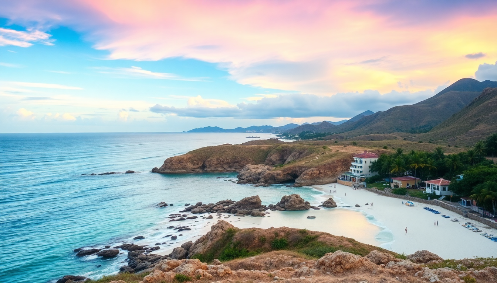

Best Beaches in Mexico: Cancun, Tulum, Playa del Carmen & Cabo

We spent six weeks bouncing between the Yucatán and Baja, hitting every stretch of sand we could find. Some beaches are postcard-perfect but useless for swimming. Others are gritty, rocky, and somehow still worth the trip. Here’s what we actually found at the four biggest beach hubs in Mexico.
Which beaches in Cancun are worth the hype?
Cancun’s Hotel Zone is a 22-km strip of sand, but not all of it is equal. The north end (near Punta Cancun) gets hammered with waves and seaweed in summer. The south end, closer to the Tulum highway, is calmer and cleaner.
- Playa Delfines — the widest public beach in the zone. Big waves, strong current, no lifeguard. Great for watching locals surf, bad for floating around with a beer.
- Playa Tortugas — sheltered cove near the cruise port. Water is flat, clear, and shallow. We saw families with toddlers here. The palapa restaurants on the sand sell overpriced ceviche, but the shade is free.
- Playa Chac Mool — quieter than Delfines, fewer vendors. We parked ourselves here three afternoons in a row. Best spot if you want to read a book and not be hassled every five minutes.
- Isla Mujeres ferry beach — skip the ferry terminal beach in Cancun. Instead, take the Ultramar ferry ($20 round trip) to Isla Mujeres and walk to Playa Norte. That’s the real Cancun beach experience — powdery sand, bath-warm water, zero seaweed.
We stayed at Hotel Casa Turquesa near Playa Tortugas. Small, clean, and a five-minute walk to the sand. Avoid the mega-resorts north of Km 9 if you want actual beach access — many of them have eroded shoreline and rock barriers.
Is Tulum’s beach really that crowded?
Yes, but the crowd is concentrated in one spot. The public entrance to Playa Paraíso turns into a zoo by 10 AM — towel grid, bluetooth speakers, guys selling churros. The water is stunning (turquoise, clear, 82°F), but the vibe is chaos.
The trick is to walk south. Past the public access, the beach narrows but empties out. We walked 15 minutes to Playa Santa Fe, where we had a 50-meter stretch to ourselves on a Tuesday in March. The sand is coarser here, and there’s more sargassum, but you trade perfection for peace.
- Playa Ruinas — the beach below the Tulum ruins. You pay the ruin entrance fee (currently $90 MXN) and then climb down wooden stairs. Water is incredible, but the beach is tiny — maybe 30 people max before it feels packed.
- Playa Pescadores — between Paraíso and the ruins. Local fishermen launch boats here in the morning. Good snorkeling along the rock jetty. We saw a sea turtle on our second visit.
- Cenote Calavera — not a beach, but a 10-minute bike ride from the beach road. Jump into a limestone sinkhole instead of the ocean when you need a break from salt and sand.
We ate at Burrito Amor on the main road twice. Cash only, no frills, best al pastor burrito we had in Tulum. Skip the beachfront restaurants — you’re paying $20 for a taco that costs $3 in town.
What’s the best beach in Playa del Carmen for swimming?
Playa del Carmen’s main beach (the one off Quinta Avenida) is a hard pass. It’s narrow, crowded, and the water is murky from all the boat traffic. We walked in, saw the cruise ship crowds, and left within ten minutes.
Head north instead. Playa 88 (at Calle 88) is where locals go. The water is calm, the sand is soft, and there’s a reef break about 100 meters out that keeps the waves small. We swam there for two hours without seeing a single jet ski.
- Playa Punta Esmeralda — a natural cenote pool that meets the ocean at Calle 110. Freshwater spring bubbles up in the sand, so you get a weird mix of cold cenote water and warm sea. Kids love it. We thought it was fun for 20 minutes, then the novelty wore off.
- Xpu-Ha Beach — 15 minutes south of Playa, past the big resorts. Public access is through a small parking lot. Beach clubs here rent loungers for $10 with a drink minimum. We went to La Playa Xpu-Ha — decent ceviche, decent shade, decent price.
- Colectivo to Akumal — skip the Playa town beaches entirely and take a colectivo (15 pesos, 20 minutes) to Akumal Bay. Snorkel with sea turtles in the bay for free if you bring your own mask. The turtle tours are a scam — you don’t need a guide to float in a bay.
We stayed at Hotel Barrio Latino on Calle 4. Basic rooms, rooftop pool, and a block from the ADO bus station. Perfect if you’re passing through to Tulum or Cancun.
Is Cabo San Lucas beach safe for swimming?
Short answer: most aren’t. The Pacific side of Cabo has dangerous rip currents and dramatic undertows. Playa El Médano is the main swimming beach, but even it gets rough in the afternoon. We saw a tourist get dragged out while taking a selfie. Lifeguards are present, but don’t count on them.
Swim on the Sea of Cortez side instead. Playa Santa María is a protected horseshoe bay with calm, clear water. Snorkeling is excellent — we saw parrotfish, rays, and a moray eel within ten minutes of entering the water.
- Playa Chileno — another protected bay, a bit farther north. Free parking, palapas, and a snorkel rental shack. Water is calm year-round. We preferred it over Santa María because it was less crowded.
- Lover’s Beach (Playa del Amor) — only accessible by water taxi ($15 per person from the marina). The Pacific side is dangerous, but the Sea of Cortez side is fine for wading. Go early (before 9 AM) to avoid the tour boats.
- Cerro de la Z — a viewpoint hike, not a beach, but gives you the best photo of the Arch. Start at the marina, follow the dirt path, and climb for 20 minutes. Bring water and wear shoes — the rocks are sharp.
We ate at Taquería El Paisa on Calle Hidalgo. Al pastor off a vertical spit, tortillas made to order, and a salsa bar that actually has heat. $2 per taco. The tourist taco joints on the marina charge $6 for the same thing.
When is the worst time to visit these beaches?
June through October is sargassum season in the Yucatán. Cancun, Tulum, and Playa del Carmen get piles of brown seaweed that smell like rotten eggs. The resorts clean their private stretches, but public beaches often go unraked for days. We visited Tulum in late July and the beach was a mess — we spent more time stepping over seaweed than swimming.
- November to March — best for the Yucatán. Clear water, minimal seaweed, cooler air temps (75-85°F). Crowds are heavy around Christmas and Easter, but the beach is worth it.
- April to June — decent window. Seaweed starts picking up in May, but it’s manageable. Fewer crowds, lower hotel rates.
- July to October — Cabo is better during these months. The water is warm, the seaweed is minimal, and the crowds are thinner. Hurricane risk exists, but storms usually pass quickly.
For Cabo, avoid December and January if you don’t like cold water. The Sea of Cortez drops to 68°F, and the wind kicks up. We swam in February and regretted it — the water was bone-chilling.
FAQ
Is it safe to swim at any beach in Cabo? Only the protected bays on the Sea of Cortez side — Playa Santa María, Playa Chileno, and Lover’s Beach (Sea of Cortez side). The Pacific beaches (El Médano, Divorce Beach) have dangerous rip currents. Always check with a lifeguard before entering the water. If there’s no lifeguard, don’t swim.
Do I need a rental car to reach the best beaches? For Cancun and Playa del Carmen, no — colectivos and ADO buses cover the coast cheaply. For Tulum, a bike or scooter is useful for reaching cenotes and quieter beaches. For Cabo, a rental car helps, but water taxis cover the main bays. We used Discover Cars for a week in Cabo and it was worth it.
Which beach is best for avoiding seaweed? Cabo’s Sea of Cortez beaches have almost no sargassum. In the Yucatán, the beaches on Isla Mujeres (Playa Norte) and the protected coves near Akumal see less seaweed than Cancun’s Hotel Zone or Tulum’s main strip. Check the Sargassum Monitor Facebook group before you go — locals post daily updates.